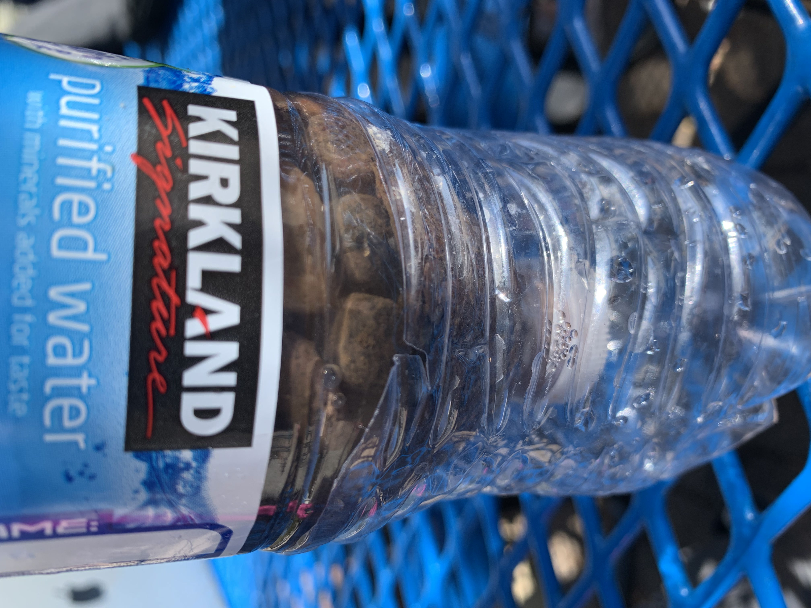

Engineering Journal
Albany Lansang P4
Week 3, 09/02/2022
This week, we started working now that we're more settled in. We got started on TinkerCad and got to mess around a little. The first thing I designed was cheese and then I designed a sink.

Week 4, 09/09/2022
We learned about mechanical engineering and what our project on this unit would be. We watched some examples on old Rube Goldberg projects and Mr. Kim explained that we would be doing the same thing. The objective being to have some obstacles that would end in a needle popping a ballon. On that friday, we did an exercise where we would draw the letter "E" on a smaller piece of paper and then translate those measurements on a much larger piece of paper.
Week 5, 09/16/2022
This week, we spent a lot of time actually getting to build our Rube Goldburg projects after CAD-ing it last week. On Friday, the challenge was to build a paper boat that could hold weight while in the water. Our boat didn't last very long but it was ok, it was a cool boat(that I also don't have a picture of).

Week 6, 09/23/2022
We spent most of the week finishing up our Rube Goldburg projects. On the last day of the week, we got to test if they worked and if we needed to adjust anything. We also spent time adjusting the CAD because of a few modifications. Thankfully, for our group project, it worked after a couple tries. With a pully system and some marbles, we were able to pop the ballon after a series of obstacles
Week 7, 09/30/2022
Starting the new unit that goes into Hardware engineering, we were visited by a Guest speaker on Wedensday. After we listened to the speaker, we had had to "dissect" an old laptop and navigate all the parts. Mr.Kim had us name all the parts on a worksheet and then put the laptop back together when we were done.


Week 8, 10/06/2022
This week, we started learnign about our new unit in bioengineering. There was a slide show where we learned about how broad of a spectrum biological engineering is and all the different things it consists of including prosthetics and genetic and tissue engineering. On The first full day of class, we worked on a prosthetic we would build for an animal, just to get into designing things around living creatures. I decided to build a prosthetic for an angler fish whose esca was no longer. It's a fairly simple design that wraps around the body of the fish, with an illuminescent light at the end of the arc. It serves the same purpose as to act as bait for other prey that the angler fish can eat.

Week 9, 10/14/2022
After the bioengineering unit, we started on our aerospace engineering unit. The project for this unit it to build bottle rockets. The goal is to go as high as possible and also possibly incorporate a payload. The payload is optional as it's a bit more challenging to make. As far as our weekly challenge goes, we made a flying paper object, which mostly consisted of paper airplanes or just crumpled up paper balls. The goal was to hit a bin from the balcony. It didn't take long for everyone to throw their paper and realize the challenge was harder than we thought--it was windy on Thursday. After the challenge, we came back inside the classroom to finish CAD-ing our bottle rockets and update our websites for quarter grades at the end of the week.
Week 10, 10/21/2022
Most of the week was spent drafting and finalizing our bottle rockets and finding all the materials we needed. On the final day of class, we got to launch the rockets with Ms. Petrossian's class. The basic trend of the rockets was the sharp tip that would help the rocket glide through air as well as the "wings" on the sides, also helping with the aerodynamics of the rocket. My group also tried to incorporate a payload but the parachute attached to the payload got stuck on a piece of tape. Though, our rocket did end up traveling relatively far compared to some other bottle rockets.
Week 11, 10/28/2022
This week, we got into the brief unit of Environmental Engineering. Mr. Kim presented some slides so that we, as a class, could have some general knowledge before going into our project/lab. On the project day, we were given materials to make a water filter. The materials consisted of a water bottle, some cotton balls, sand, pebbles, and bigger rocks. As the water travels through the materials, bigger rocks all the way to the cotton balls, any debris was supposed ot be removed from the water and technically making clean water.
Week 12, 11/04/2022
This week, we got started in our Electrical Engineering Unit. Mr.Kim presented his slides to us so we would have a better understanding of Electrical Engineerign and on the second day of class, we worked on TinkerCAD where we were introduced to breadboards and practiced circuiting.


Week 13, 11/11/2022
After messing around on TinkerCAD last friday, we were able to use an actual breadboard and remake the labs we did on TinkerCAD in real life. The process was a lot more fun than trying to do it virtually. Figuring out where everything had to go all the while following the lab instructions was rigorous but fun.